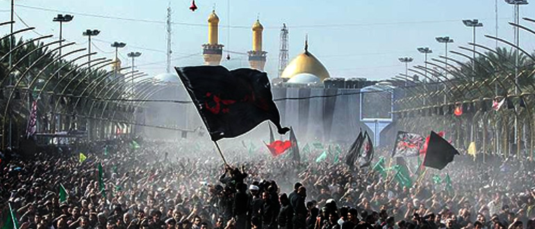

Introduction to the Procession:
Welcome everyone to our procession as we embark on a journey of remembrance and solidarity, covering a distance of 48 kilometers. Today, we gather not only to traverse this physical distance but also to traverse the annals of history, to honor the memory of a revered figure, Imam Husain.
Significance of the procession:
Our procession holds profound significance as it serves as a platform to commemorate the timeless legacy of Imam Husain, a figure whose life and sacrifice continue to inspire millions across the globe. As we march forward, let us reflect on the values of courage, justice, and sacrifice exemplified by Imam Husain, which remain as relevant today as they were centuries ago.
Who Was Imam Husain:
Imam Husain ibn Ali, the grandson of Prophet Muhammad, stands as an epitome of resilience and righteousness. His unwavering commitment to truth and justice in the face of tyranny and oppression serves as a beacon of light for humanity. Imam Husain's principled stance against injustice, culminating in his martyrdom at the Battle of Karbala, remains a symbol of resistance against tyranny and a call to uphold the principles of justice and dignity.
Why We Gather to Honor His Memory:
We gather here today not merely as participants in a procession, but as torchbearers of Imam Husain's message of hope and resilience. His sacrifice transcends time and space, resonating with people of all backgrounds and beliefs. By honoring Imam Husain's memory, we reaffirm our commitment to stand against oppression and injustice in all its forms.
Historical Context:
Lineage and Upbringing:
Imam Husain ibn Ali was born in 626 AD, the second son of Imam Ali ibn Abi Talib and Fatimah, the daughter of Prophet Muhammad. As a member of the Ahl al-Bayt (the household of the Prophet), Imam Husain was raised in an environment steeped in piety, knowledge, and devotion to Islam. His upbringing instilled in him a deep sense of righteousness and compassion, traits that would define his character throughout his life.
Events Leading to the Tragedy of Karbala:

The tragedy of Karbala unfolded against the backdrop of a power struggle within the Muslim community following the death of the Prophet Muhammad in 632 AD. Imam Husain found himself at the center of this tumultuous period as tensions escalated between the ruling Umayyad dynasty and supporters of the Prophet's family.
In 680 AD, Imam Husain received numerous appeals for help from the people of Kufa (in present-day Iraq) who sought to overthrow the tyrannical rule of the Umayyad caliph, Yazid ibn Muawiya. Responding to their pleas, Imam Husain, along with his family and companions, embarked on a journey to Kufa. However, upon reaching Karbala, they were intercepted by Yazid's forces.
The Tragedy of Karbala:
Imam Husain, despite being vastly outnumbered, refused to pledge allegiance to Yazid, choosing instead to uphold the principles of justice and dignity. On the 10th of Muharram, known as Ashura, Imam Husain and his followers faced a brutal onslaught from Yazid's army. Despite enduring thirst, hunger, and relentless attacks, Imam Husain and his loyal companions remained steadfast in their commitment to truth and righteousness.

The tragedy reached its climax with the martyrdom of Imam Husain and his family members, including his infant son Ali al-Asghar, whose throat was tragically pierced by an arrow. The events of Karbala represent a watershed moment in Islamic history, symbolizing the struggle between oppression and justice, tyranny and righteousness.
The Battle of Karbala:
The Battle of Karbala took place on the 10th of Muharram, 680 AD (61 AH), near the banks of the Euphrates River in present-day Iraq. It was a pivotal moment in Islamic history and a defining moment for the followers of Imam Husain.
Imam Husain's Stand:
Imam Husain, accompanied by his family members and a small band of loyal followers, found himself encircled by the vast army of Yazid ibn Muawiya, the Umayyad caliph. Despite knowing the odds stacked against him, Imam Husain refused to submit to the tyrannical rule of Yazid, choosing instead to uphold the principles of justice, dignity, and resistance against oppression.
Sacrifices of Imam Husain's Family:
Imam Husain's family members, including his beloved brother Abbas, his sons Ali Akbar and Ali Asghar, and his sister Zainab, displayed unwavering courage and resilience in the face of adversity. Abbas, known for his unwavering loyalty, valiantly defended Imam Husain's camp until his last breath. Ali Akbar, Imam Husain's eldest son, fought bravely on the battlefield, echoing the valor of his grandfather, Ali ibn Abi Talib. Ali Asghar, just an infant, became a symbol of innocence and sacrifice, tragically losing his life to a stray arrow.
Sacrifices of Imam Husain's Companions:
Imam Husain's companions, numbering no more than seventy, stood by him with unwavering loyalty and devotion. Each one of them willingly sacrificed their lives in defense of truth and justice, undeterred by the overwhelming odds against them. Their selflessness and determination serve as a timeless example of courage and sacrifice for generations to come.
Martyrdom of Imam Husain:
Amidst the chaos of the Battle of Karbala, Imam Husain stood alone, surrounded by enemies on all sides. Despite his dire circumstances, with no reinforcements to aid him, he valiantly faced thousands of adversaries single-handedly. For three agonizing days, he endured the torment of thirst, hunger, and exhaustion, yet his resolve never wavered.
In the final moments, as the intensity of battle reached its peak, Imam Husain found himself isolated, with no one left to support him. His loyal companions and family members had fallen one by one. Despite the weight of grief and the burden of carrying the lifeless forms of his beloved sons, nephews, brothers, and friends, Imam Husain continued to fight with unmatched courage and determination.
His solitary stand against tyranny and oppression serves as a profound example of unwavering commitment to principles of truth and justice. Even in the face of overwhelming odds and unimaginable suffering, Imam Husain remained steadfast, refusing to yield to injustice. His sacrifice epitomizes the timeless struggle for dignity and freedom, inspiring generations to come to resist oppression and uphold the values of righteousness and compassion.
The Battle of Karbala stands as a testament to the indomitable spirit of Imam Husain, his family, and his companions, who chose to sacrifice everything for the sake of truth and justice. Their noble sacrifice continues to inspire countless individuals to stand up against oppression and tyranny in all its forms.
Purpose Behind Imam Husain's Stand:
Imam Husain's primary purpose was to uphold the principles of justice and righteousness, which lie at the core of Islamic teachings. He recognized that submission to tyranny and oppression would compromise these fundamental values, leading to the erosion of the moral fabric of society. By standing firm against injustice, Imam Husain sought to preserve the integrity of Islamic principles and inspire others to resist tyranny in all its forms.
Imam Husain, as the grandson of Prophet Muhammad, felt a deep responsibility to safeguard the legacy of his grandfather. He understood that acquiescing to the oppressive rule of Yazid would betray the teachings of the Prophet, who advocated for compassion, mercy, and justice. Imam Husain's stand at Karbala was a testament to his commitment to preserving the true essence of Islam, untainted by the corruption and tyranny of the ruling elite.

Imam Husain's refusal to pledge allegiance to Yazid was a defiant act of resistance against tyranny and oppression. He recognized that submission to unjust rulers would embolden them to perpetuate their tyrannical reign, leading to further oppression and suffering for the people. By confronting Yazid's forces head-on, Imam Husain demonstrated that resistance against tyranny is a sacred duty, regardless of the personal cost.
Imam Husain's stand at Karbala was not merely a historical event but a timeless example of courage, resilience, and sacrifice. His steadfastness in the face of adversity continues to inspire generations of individuals to stand up against injustice and oppression, regardless of the consequences. Imam Husain's message transcends time and space, resonating with people of all backgrounds and beliefs, and serving as a beacon of hope for the oppressed and downtrodden.
Imam Husain's martyrdom at Karbala established a lasting legacy of resistance against tyranny and oppression. His sacrifice galvanized future generations to confront injustice with courage and determination, fostering a tradition of resistance that endures to this day. The memory of Imam Husain serves as a reminder that the struggle for justice is an ongoing endeavor, requiring unwavering commitment, sacrifice, and perseverance.
Imam Husain's stand against oppression and tyranny was driven by a profound sense of duty, guided by the principles of justice, righteousness, and an unwavering refusal to compromise with injustice. His legacy continues to inspire millions around the world to stand up against oppression and tyranny in all its forms.

Imam Husain's patience and steadfastness in the face of adversity serve as exemplary virtues that continue to inspire countless individuals.
1. Patience in the Face of Trials:
Despite facing numerous trials and tribulations, Imam Husain remained remarkably patient and composed. Anecdotes from the Battle of Karbala depict his unwavering resolve even in the most challenging circumstances. Despite the scorching desert heat and the scarcity of water, Imam Husain maintained his composure and patience, setting an example of fortitude and resilience for his followers.
2. Steadfastness in the Pursuit of Justice:
Imam Husain's unwavering resolve in the pursuit of justice is exemplified by his refusal to compromise with tyranny and oppression. Despite knowing the grave risks involved, he remained steadfast in his commitment to upholding the principles of righteousness and truth. His famous quote, "I only desire to spread good values and prevent evil," reflects his unwavering resolve to stand up for what is right, regardless of the consequences.
3. Endurance in the Face of Adversity:
Throughout the ordeal of Karbala, Imam Husain demonstrated remarkable endurance and resilience. Despite the overwhelming odds stacked against him, he never wavered in his determination to confront oppression and uphold the dignity of his cause. His patience and endurance serve as a source of inspiration for all those facing adversity, reminding them of the power of resilience and determination in the face of seemingly insurmountable challenges.
4. Forgiveness and Compassion:
Even in the midst of tragedy, Imam Husain displayed remarkable forgiveness and compassion towards his adversaries. Despite the betrayal and violence inflicted upon him and his family, he urged his followers to refrain from seeking revenge and instead embrace forgiveness and compassion. His famous quote,"Do you think that forgiveness is a sign of weakness? It is the attribute of the strong," encapsulates his belief in the transformative power of forgiveness and compassion.
5. Faith and Trust in the Divine Will:
Imam Husain's unwavering faith and trust in the divine will sustained him throughout his trials and tribulations. Despite the tragic outcome of the Battle of Karbala, he remained steadfast in his belief that his sacrifice was part of a greater divine plan. His famous words, "If the religion of Muhammad was not going to live except with my martyrdom, O swords, take me," reflect his profound faith and acceptance of his destiny.
Imam Husain's patience, perseverance, and unwavering resolve serve as timeless examples of courage and resilience in the face of adversity. His legacy continues to inspire millions around the world to uphold the values of justice, compassion, and forgiveness, even in the most challenging circumstances.
Imam Husain's unwavering stand against injustice underscores the importance of speaking out and taking action against oppression and tyranny. His refusal to submit to the unjust rule of Yazid serves as a reminder that silence in the face of injustice only perpetuates it. Imam Husain teaches us that it is our moral duty to stand up for what is right, even if it means standing alone against overwhelming odds.

Throughout his trials and tribulations, Imam Husain maintained unwavering faith and trust in the divine will. His steadfastness in the face of adversity reminds us of the importance of maintaining faith and seeking solace in times of difficulty. Imam Husain's example teaches us that faith provides the strength and resilience needed to endure life's challenges with patience and grace.
Imam Husain's selfless sacrifice at Karbala exemplifies the highest form of altruism and selflessness. He willingly laid down his life for the greater good, prioritizing the well-being of others over his own safety and comfort. Imam Husain's example teaches us that true greatness lies in selfless service to others and that acts of sacrifice have the power to inspire and uplift humanity.
Imam Husain's unwavering commitment to upholding principles of justice, righteousness, and dignity serves as a beacon of integrity and moral courage. His refusal to compromise his values, even in the face of immense pressure, highlights the importance of living with integrity and staying true to one's convictions. Imam Husain teaches us that it is better to die with honor than to live with shame.
Imam Husain's legacy continues to inspire hope and resilience in the face of adversity. His courage and sacrifice serve as a source of strength for all those facing oppression and injustice. Imam Husain teaches us that even in the darkest of times, there is always hope, and that through courage and perseverance, we can overcome any challenge.
Imam Husain's life and sacrifice offer timeless lessons of courage, faith, selflessness, and integrity. His legacy continues to inspire millions around the world to strive for justice, uphold their principles with integrity, and embrace the power of selfless service to humanity.
Relevance Today:
Imam Husain's stand against tyranny resonates with contemporary struggles against oppression, whether it's authoritarian regimes, systemic injustice, or human rights abuses.
Imam Husain's emphasis on justice and equality is relevant in addressing modern-day issues such as socioeconomic disparities, discrimination, and marginalization.
Imam Husain's message of compassion and inclusivity promotes dialogue and understanding among people of different faiths, fostering harmony in an increasingly diverse world.
Imam Husain's selfless sacrifice inspires individuals and organizations to engage in humanitarian efforts, providing aid and support to those in need regardless of background or belief.
Imam Husain's leadership style, characterized by integrity, humility, and service to others, offers valuable lessons for contemporary leaders striving to create positive change with moral authority.
Imam Husain's resilience in the face of adversity serves as a source of hope and inspiration for individuals and communities confronting challenges such as conflict, displacement, and natural disasters.

Join the Movement: Spread the Message of Imam Husain
Your voice matters, and your actions can make a difference. Here's how you can participate in spreading the timeless message of Imam Husain and his legacy of justice, compassion, and resilience:
Remember, every small action counts. By participating in spreading the message of Imam Husain, you contribute to a global movement of justice, compassion, and resilience. Together, we can honor his memory and strive to create a more just and equitable world for all.